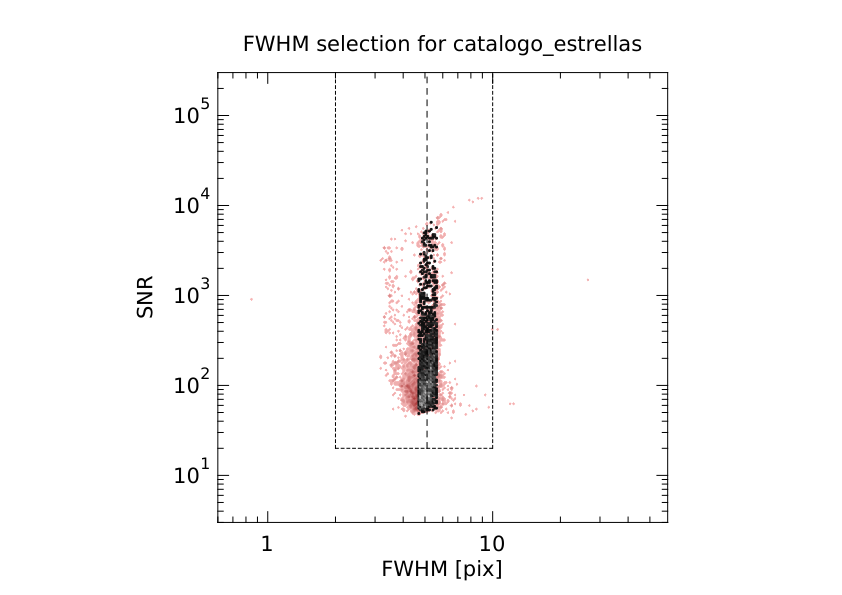
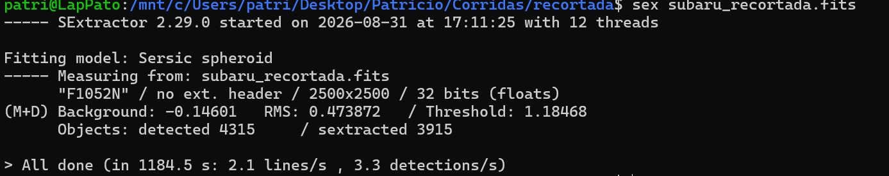
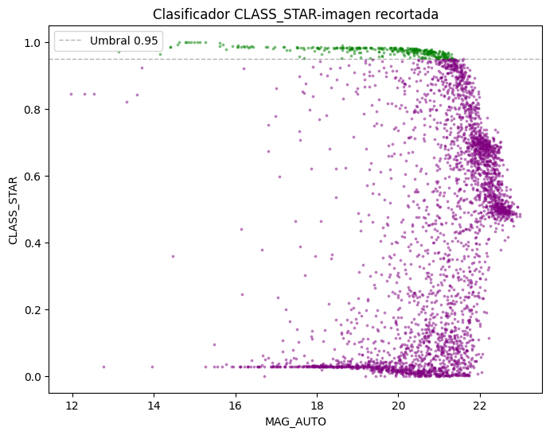
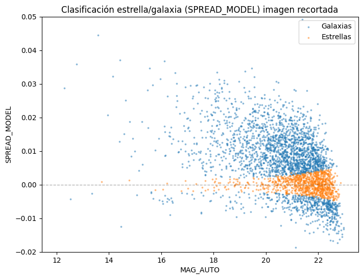
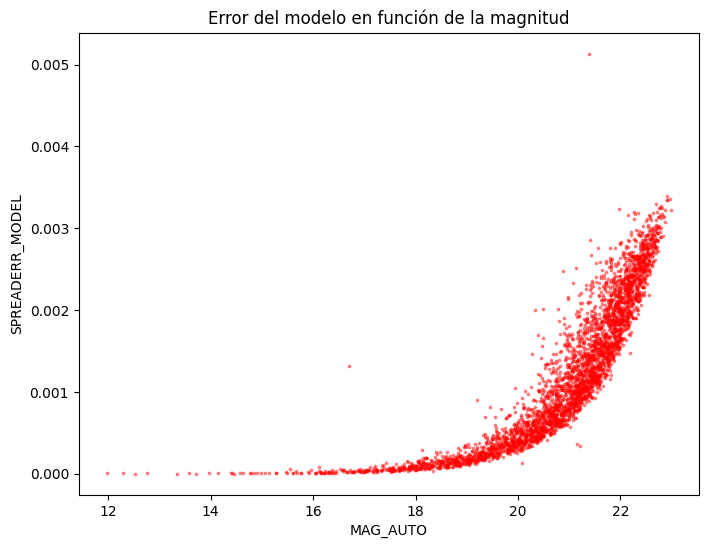
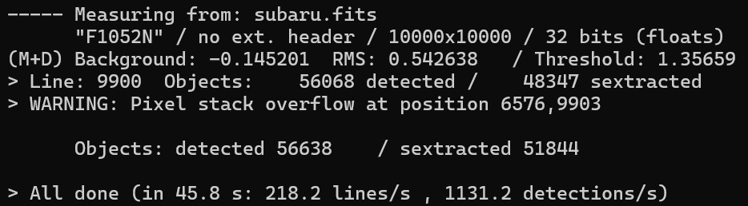
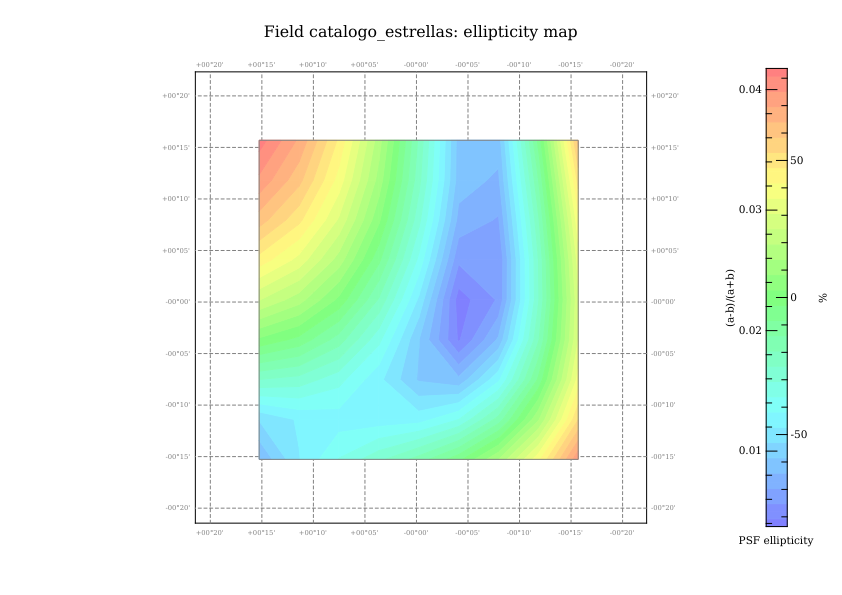
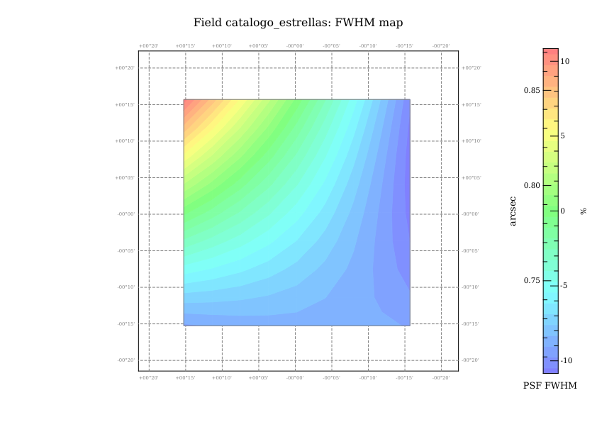
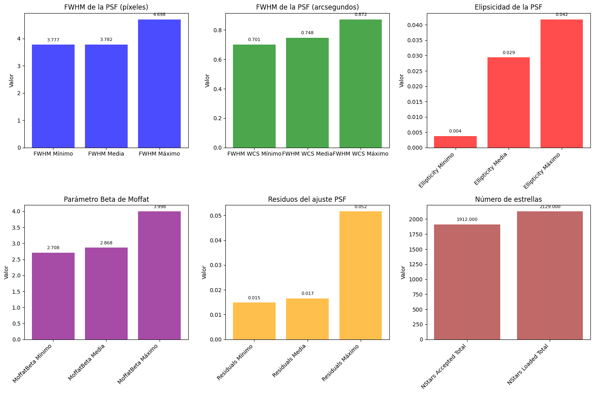

CLASS_STAR>0.95 y FLAGS==0 (der).
Al momento de meter el modelo PSF a SExtractor este tardaba demasiado en realizar el procesamiento de la imagen (esto debe ser por algun problema de la computadora en donde se esta trabajando), por lo que optamos en cortar la imagen desde el centro en 2500 x 2500 píxeles y continuar con el proceso.

Para el caso de la imagen recortada, tenemos que se detectaron 3717 objetos y SExtractor extrajo solo 3420, para los clasificadores CLASS_STAR y SPREAD_MODEL se tomo como umbral 0.95 y $|SPREAD\_MODEL|< 0.002 + SPREADERR\_MODEL$ respectivamente. CLASS_STAR clasificó como objeto puntual un total de 313 objetos, mientras que SPREAD_MODEL tomó 956 objetos.

CLASS_STAR, tomando un umbral para fuentes puntuales de 0.95.

SPREAD_MODEL, tomando un umbral de $|SPREAD\_MODEL|< 0.002 + SPREADERR\_MODEL$.

SPREAD_MODEL, el error aumenta para magnitudes grandes.
Nuestro propósito es construir un criterio de clasificación que nos permita decir con seguridad hasta que magnitud la clasifiación es confiable, para ello vamos a hacer una segunda iteración de la imagen, en la que usaremos CLASS_STAR y extraeremos los objetos puntuales en un nuevo catálogo, este nuevo catálogo lo vamos a usar con PSFEx para que modele la PSF, esperando que sea un mejor modelo que el que obtuvimos en la primera iteración, y posteriormente vamos a usar este nuevo modelo para hacer una nueva clasifiación con SPREAD_MODEL.
Vamos a continuar con los mismos parámetros de configuración que usamos en la primera iteración, ahora vamos a pedirle a SExtractor CLASS_STAR usando el mismo umbral de 0.95 y tomaremos los objetos que superen ese umbral para generar un nuevo catálogo que usaremos con PSFEx, el catálogo que generaremos con CLASS_STAR es usando la imagen completa y no solo la región recortada, esto es porque queremos que PSFEx tenga más objetos para poder generar un modelo de PSF más preciso.

CLASS_STAR. Se detectaron 56638 objetos, de los cuales 51844 fueron extraidos.
Ya con el catálogo generado, vamos a usar python para aplicar el filtro que queremos a CLASS_STAR, para ello usaremos el siguiente código:
from astropy.io import fits
with fits.open('/content/class_star_prepsfex.fits') as hdul:
data = hdul[2].data
mask = (data['CLASS_STAR'] > 0.95) & (data['FLAGS']==0)
filtered_data = data[mask]
hdul[2].data = filtered_data
hdul.writeto('catalogo_estrellas.fits', overwrite=True)
print(f"Objetos seleccionados: {mask.sum()} de {len(mask)}")
De donde obtenemos un catálogo con 3562 objetos que cumplen con el criterio de CLASS_STAR y que no tenga FLAGS, así pasamos a usar este nuevo catálogo con PSFEx, en donde vamos a dejar el parámetro SAMPLE_AUTOSELECT en Y para que PSFEx aplique un segundo filtro de selección de objetos para descartar posibles outliers.

CLASS_STAR>0.95 y FLAGS==0 (der).






Al comparar las imagenes obtenidas con el catálogo final podemos diferencias sutiles, en las métricas obtenidas, la media de FWHM cambio de 4.1 a 3.782, la media de la elipticidad cambio de 0.013 a 0.029, la media del parámetro de Moffat cambio de 2.519 a 2.868, la media de los residuals de la PSF cambio de 0.014 a 0.017. El poco cambió que muestran las métricas puede deverse a que PSFEx por si solo ya aplica los filtros necesarios para su selección de muestras, aunque al fijarnos en la figura 54, las muestras que toma para el nuevo catálogo parecen ser más "limpias" en comparación con el catálogo sin filtrar.
Ahora, pasaremos a aplicar este modelo de PSF a nuestra imagen (recordemos que ahora trabajaremos con la imagen recortada por lo tardado que sería usar la imagen completa para la clasificación) y obtener el clasificador SPREAD_MODEL.